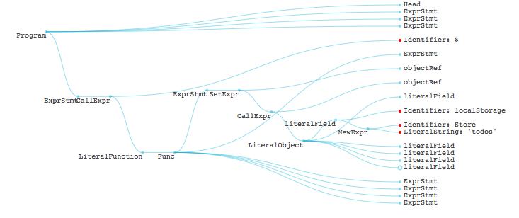
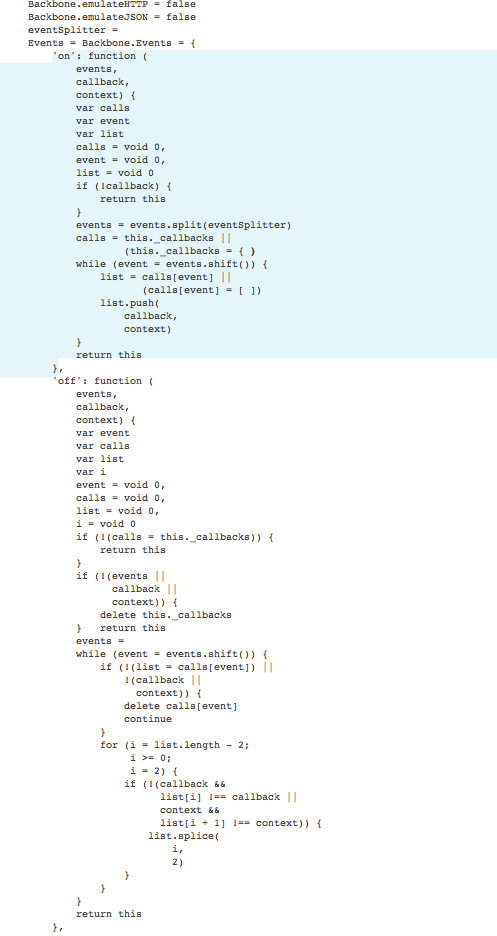
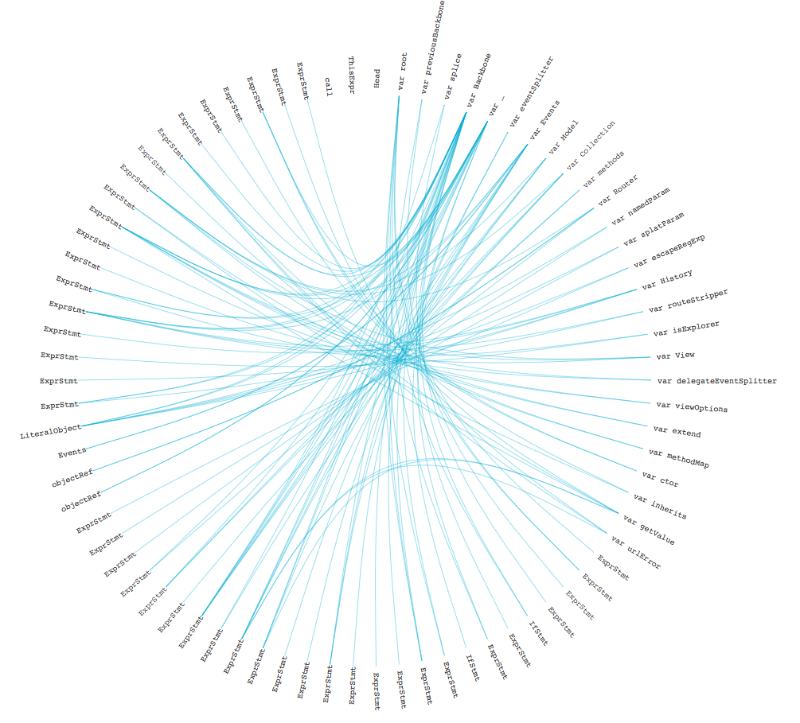

Code Cartography
Code Cartography is the practice of creating maps of software source code. Through interactive visualization, users are able to see at once the meaning of orders of magnitude more code than is possible through conventional text based tools. They are able to see syntax and semantics from the level of modules down to the level basic blocks. They are able to select a variety of semantic graphs including those depicting reference dependencies, call graphs, class inheritance, module dependencies, control flow, data flow, profile information, code coverage.
Code maps are built on three types of views. The syntax view displays an expandable abstract syntax tree, which allows users to move between levels of program detail. The text view shows the formatted text of the code, which allows users to see just the code that is of interest during a particular investigation. The third and most powerful view is the semantic view, which allows users to see various semantic relationships between selected parts of the program. These three views are linked so that a selection in one view will cause the other views to be updated to represent the same parts of the program.
Syntax View. The syntax view refracts code through the grammar of its language. Selecting a
node in the tree graph expands or retracts that node. The syntax view allows parts of the program
to be seen in the context of the whole program. Selecting a node in the tree view highlights that
node in the other views. Figure 1 illustrates the tree view.

Figure 1. A syntax view of the backbone example, todos.js, showing the definition
of the property 'localStorage'.
Text View. The text view provides a formatted, highlighted view the original source text, and
elides details that are not significant to the current point-of-view. The text view provides a bridge between
the original code and the other, more abstract views. It is complete and compatible with the source
code being mapped. Figure 2 illustrates the text view.

Figure 2. A text view of backbone.js showing the syntax based selection of a
field of an object initializer.
Semantic View. The semantic view refracts code through the semantics of the language. This
includes static analysis performed by a compiler, as well as by dynamic profiling and even user
annotations. Semantic views are generated off-line by compiler plugins. The relationships
represented are limited only by what can be shown in a network graph. Figure 3 shows an example
of a semantic view.

Figure 3. A semantic view of backbone.js showing references to variables defined in the toplevel function module.
One Model, Three Views. These three views are backed by the same core data structures. Each is indexed by the nodes of the abstract syntax tree. Navigating in one view is reflected in the other views. Selection in all three views is constrained by the range of nodes in the syntax tree. For example, a user can select the body of a function in the text view by clicking within that function until the whole body is selected. The syntax view will show the relationship of that function to the rest of the tree in both directions. The semantic view will show the semantics of the function as it relates to code outside the function.
Each view affords some level of user control over the formatting and highlighting. For example, the code formatting and highlighting in the text view and the color scheme for nodes and edges in the various graph views are controlled by standard or custom preferences.
Commissions and Collaborations. We seek commissions for Code Cartography works, as well as collaborations that improve this practice. The following are a few such projects we have in mind:
Inquiries should be directed to Jeff Dyer